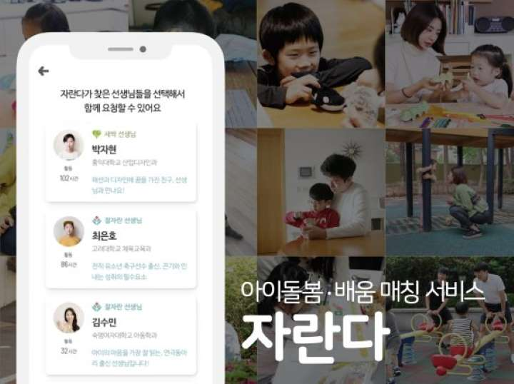
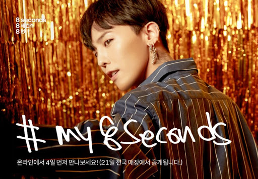
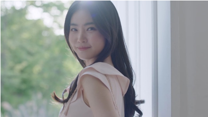
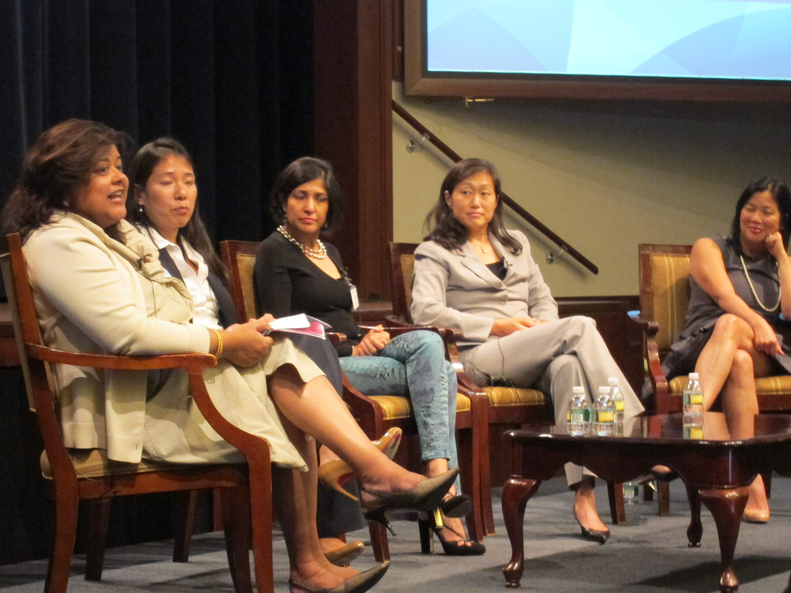

Experience
퍼포먼스 마케터
2018.07-2020.06 | 아이돌봄서비스 자란다 마케팅팀

담당했던 업무
- 신규 고객 유입 온/오프라인 캠페인 기획 및 ROAS 개선
- 온라인 광고 매체 운영 효율화를 통한 CAC최적화
- 구매 퍼널 최적화를 위한 그로스해킹 A/B 테스트
- 할인/제휴 프로모션과 CRM을 통한 고객 단가 확대
- 인지도 확대를 위한 PR 보도자료 작성, 콘텐츠 운영
업무성과와 배운 점
"지금의 4배 이상 성장하는 로켓 스타트업을 만들기 위해 첫번째 마케터로 입사해 2년간 마케팅팀을 리드하며 함께 키웠습니다.
플랫폼 사업 특성상 공급자와 수요자 마케팅간의 밸런스를 맞추며 고속 성장을 위한 전략을 다방면으로 고민했습니다.
스타트업에게 주어진 거의 모든 옵션을 맨바닥부터 실행해보며 어엿한 예산과 ROAS가 나오는 마케팅 공식을 만들었습니다.
전사적인 협업을 통해 제품개발과 상품 기획까지 넘나들며 진짜 성장을 만드는 근육을 키울 수 있었습니다."
신규사업전략/광고AE
2015.09-2018.05 | 제일펑타이 플랫폼비즈니스팀

담당했던 업무
- 국내 기업의 글로벌 마케팅 캠페인 운영
(광고주: 아모레퍼시픽, LG생활건강, 정관장, 이마트, 삼성물산 등)
- 모바일 앱 광고 상품 및 신사업 기획
- 글로벌 커머스 플랫폼 내 한국 카테고리 운영
- 오프라인 컨퍼런스 기획 및 운영
업무성과와 배운 점
"글로벌 광고 대행사의 AE로 국내 기업이 글로벌 고객을 대상으로 진행하는 마케팅 전략을 기획했습니다.
글로벌 크리에이트팀과 함께 주요 광고주인 패션, 코스메틱, 면세, 유통 브랜드의 한국 여행 관련 광고 전략과 제작부터 해외 커머스몰의 운영까지의 통합 솔루션 PM 역할을 수행했습니다.
또한, 국내애서 외국인 관광객이 가장 많이 사용하는 여행앱의 제휴 마케팅을 담당하며 와이파이, 티켓 판매 등의 솔루션을 만들고 판매 수익을 내는 등
사업 기획 업무를 함께 했습니다."
광고AE 인턴
2015.04-2015.07 | SK플래닛 캠페인플래닝팀

담당했던 업무
- 코스메틱 브랜드 연간 마케팅 운영
- TV, 디지털 광고 촬영 및 제작 서포트
- 경쟁PT 제안 참여 (공익광고, 금융, 정유, 게임)
- 사내 트렌드 리포트, 콘텐츠 제작 참여
업무성과와 배운 점
"글로벌 코스메틱 브랜드의 ATL부터 BTL 프로모션까지 브랜드 전략과 제작, 운영 실무을 서포트했습니다.
PT를 위한 공익광고, 금융, 정유, 게임 브랜드의 기업PR 캠페인의 제안 단계부터 참여하며 브랜드의 기본이 되는 리서치와 기획을 배웠고,
실행을 위한 인터뷰 섭외, 신기술을 활용한 제작 문의 등 발빠른 실행을 짧게나마 경험했습니다.
"
마케팅 매니저
2013.08-2014.01 | 뉴욕 소재 NPO Asian Women in Business

담당했던 업무
- 연간 컨퍼런스, 세미나 등 오프라인 이벤트 홍보
- 뉴스레터, 커뮤니티 이벤트 활용한 CRM 활동
- 대학생 스콜라십 프로그램 홍보 영상 제작
- 기업 후원 커머스 사이트, 크라우드펀딩 통한 B2C Fundraising 운영
업무성과와 배운 점
"졸업을 앞두고 교육부에서 선발하는 WEST 프로그램을 통해 뉴욕 소재 비영리단체 AWIB에서 마케팅 인턴십을 했습니다.
아시아 비즈니스 여성의 Empowerment를 위한 온오프라인 활동을 서포트하며 좁은 시야로는 볼 수 없었던 새로운 영역의 마케팅/홍보 활동과
풍부한 네트워크를 통한 새로운 비즈니스 기회와 트렌드를 읽을 수 있었던 좋은 기회였습니다. "
Contact
Mail: cocoa9045@naver.com
*진행했던 프로젝트 관련 데이터는 각 사의 대외비이므로 공개하지 않습니다.
*인터뷰, 컨설팅 요청 시에는 요청하신 사업 현황에 맞는 경험과 생각을 공유합니다.